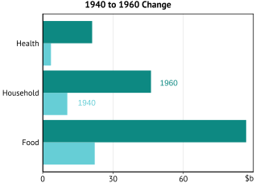

The purpose of this vignette is to demonstrate how to use the
functions in theme61 to produce a correctly formatted graph
in the e61 Institute style.
The starting graph
We’re going to turn a default ggplot2 graph into one that is formatted in the e61 style using the package features.
gg <- ggplot(data_3, aes(x = year, y = value, colour = category)) +
geom_line() + theme(legend.position = "bottom")
Applying the e61 theme to the graph
Most of the theming is done by the theme_e61() function.
Simply add this to your plot and (if needed) set some arguments.
theme_e61() deliberately steers you away from long
y-axis titles. The information required to interpret the graph should be
contained in the title or subtitle.

The theme61 colour palette
theme61 comes with a comprehensive colour palette that
you can use in your colour and fill scales. The colour palette is built
into the theme61 colour and fill functions
(scale_colour_e61() and scale_fill_e61()).
In case you want to customise the chosen colours, all of the valid colours in the e61 colour palette are stored as named objects in the package, they can be accessed by name (see here for the full list of names). The colour name can be deduced from the position in the colour palette image below.
- Naming syntax:
e61_<colour name nospaces><numeric position on the scale> - Examples:
e61_bluedark3ore61_maroonlight8. - Specifying just the colour name (e.g.
e61_teallight) will also select the left-most colour on the scale (colour “0”).

Formatting graph colours
scale_colour_e61() and scale_fill_e61()
provide access to the e61 colour palette.
Generally you just need to specify how many colours are needed as an argument.
e61_palette() gives you manual access to the colour hex
codes.
gg <-
ggplot(data, aes(x = year, y = value, colour = category)) +
geom_line() +
theme_e61() +
scale_colour_e61(5)
Formatting axis scales
scale_y_continuous_e61() is the preferred axis scale
function for graphs. It duplicates the axis by default and allows you to
specify the axis limits in the limits argument to ensure
good aesthetics. Limits are highly recommended to be manually specified
as the defaults are likely to be a bit unaesthetic.
gg <-
ggplot(data, aes(x = year, y = value, colour = category)) +
geom_line() +
theme_e61() +
scale_y_continuous_e61(limits = c(0, 100, 25), name = "$b") +
scale_colour_e61(5)
Dual y-axis scale support
Note: Admittedly this feature is somewhat advanced/fiddly.
Despite Hadley’s
best efforts to make it difficult to add a differently-scaled second
y-axis, this feature now exists in theme61.
gg <-
ggplot(data_dual, aes(x = year)) +
geom_line(aes(y = `Food and Tobacco`), colour = e61_palette(2)[[1]]) +
# All the action is in the next two lines
geom_line(aes(y = sec_rescale_inv(`Personal Care`, scale = 0.1, shift = 0)),
colour = e61_palette(2)[[2]]) +
scale_y_continuous_e61(limits = c(0, 100, 25), name = "$b",
sec_axis = sec_axis(~sec_rescale(.), name = "$b"),
rescale_sec = TRUE) +
theme_e61() +
mplot_label(c("Food and Tobacco\n(LHS)", "Personal Care\n(RHS)"),
c(1945, 1948),
c(75, 40))
Plot labelling
A full guide to plot labelling is here.
Graph legends are inferior to labels on the graph, so
theme61 defaults to hiding the legends. This is because
legends require you to rapidly flip between the coloured lines or bars
on the graph and match them with a box outside the graph that tells you
what that colour represents. This creates additional cognitive load,
making the message of your graph harder and slower to communicate to the
audience and therefore your graph is less effective. Graph labels put
the label on the graph directly, near the datapoint that is being
identified. This makes it faster to figure out what the graph is
about.
gg <-
ggplot(data_3, aes(x = year, y = value, colour = category)) +
geom_line() +
theme_e61() +
scale_y_continuous_e61(limits = c(0, 100, 25), name = "$b") +
scale_colour_e61(3) +
mplot_label(c("Food and\nTobacco", "Household\nOperation", "Medical and\nHealth"),
c(1944, 1954, 1953),
c(65, 55, 25))
Graph titles, subtitles and footers
When adding titles, subtitles, captions and sources, use
labs_e61(). Text is automatically wrapped if it is too long
on one line. You can adjust this or turn it off. Sources are
automatically reordered in alphabetical order if you supply the sources
as a character vector.
gg <-
ggplot(data_3, aes(x = year, y = value, colour = category)) +
geom_line() +
theme_e61() +
scale_y_continuous_e61(limits = c(0, 100, 25), name = "$b") +
scale_colour_e61(3) +
mplot_label(c("Food and\nTobacco", "Household\nOperation", "Medical and\nHealth"),
c(1944, 1954, 1953),
c(65, 55, 25)) +
labs_e61(
title = "US Personal Expenditures*",
subtitle = "1940-1960",
footnotes = "Data comes from the built-in 'USPersonalExpenditure' dataset.",
sources = c("e61 Institute", "'datasets' package")
)
Multi-panel graph support
We have discovered in our research notes that putting multiple graphs
together in a grid/panel works quite well with the format.
mpanel_e61() is a function that makes the task of producing
multi-panel graphs easier.
Note that graph titles need to be done differently in multi-panels. Each individual graph probably should not have sources or footnotes, they should be in the footer of the full multi-panel instead.
First we make the sub-plots as their own graph.
g1 <-
ggplot(data_3, aes(x = year, y = value, colour = category)) +
geom_line() +
theme_e61() +
scale_y_continuous_e61(limits = c(0, 100, 25), name = "$b") +
scale_colour_e61(3) +
mplot_label(c("Food and\nTobacco", "Household\nOperation", "Medical and\nHealth"),
c(1944, 1954, 1953),
c(65, 55, 25)) +
labs_e61(
title = "Aggregates"
)
g2 <-
ggplot(data_dual, aes(x = year)) +
geom_line(aes(y = `Food and Tobacco`), colour = e61_palette(2)[[1]]) +
geom_line(aes(y = sec_rescale_inv(`Personal Care`, scale = 0.1)),
colour = e61_palette(2)[[2]]) +
theme_e61() +
scale_y_continuous_e61(limits = c(0, 100, 25), name = "$b",
sec_axis = sec_axis(~sec_rescale(.), name = "$b"),
rescale_sec = TRUE) +
mplot_label(c("Food and Tobacco\n(LHS)", "Personal Care\n(RHS)"),
c(1945, 1948),
c(75, 40)) +
labs_e61(
title = "Selected Aggregates"
)
g3 <-
ggplot(data_col, aes(x = category, y = value, fill = factor(year))) +
geom_col(position = "dodge") +
theme_e61() +
scale_fill_e61(2) +
scale_y_continuous_e61(limits = c(0, 90, 30)) +
mplot_label(c("1940", "1960"),
c(1.55, 2.05),
c(15, 50)) +
labs_e61(
title = "1940 to 1960 Change", y = "$b"
)
g4 <-
ggplot(data_chg[category == "Food and Tobacco"], aes(x = year)) +
geom_line(aes(y = value), colour = e61_palette(2)[[1]]) +
geom_col(aes(y = change), fill = e61_palette(2)[[2]]) +
theme_e61() +
scale_y_continuous_e61(limits = c(0, 90, 30)) +
mplot_label(c("Aggregate", "Change from\n5 years ago"),
c(1941, 1952),
c(55, 25)) +
labs_e61(
title = "Food and Tobacco Spending", y = "$b"
)Then we use the mpanel_e61() function to put the graphs
together.
gg <-
mpanel_e61(
g1, g2, g3, g4,
title = "US Personal Expenditures*",
footnotes = "Data comes from the built-in USPersonalExpenditure dataset.",
sources = c("e61 Institute", "'datasets' package"
)
)
save_e61(here::here("man/figures/g-multi.svg"), gg)
Flipped bar graphs
Flipped bar graphs can be useful, especially if the categories have
long names. There are some changes to the theme() and
coords that are required for the flipping to look
successful, so I’ve added a function that does most of the tinkering for
you. I called it format_flipped_bar().
gg <-
ggplot(data_col, aes(x = category, y = value, fill = factor(year))) +
geom_col(position = "dodge") +
coord_flip() +
theme_e61() +
scale_fill_e61(2) +
scale_y_continuous_e61(limits = c(0, 90, 30)) +
mplot_label(c("1940", "1960"),
c(1.8, 2.2),
c(15, 50)) +
labs_e61(
title = "1940 to 1960 Change", y = "$b"
) +
format_flipped_bar()
save_e61(here::here("man/figures/g-flip.svg"))
Notice that save_e61() set the default dimensions for
flipped graphs reasonably well. Your mileage may vary if you have a
weird graph though, so always check the output!
Saving graphs
You should use save_e61() when saving graphs at e61.
save_e61() sets sensible defaults on graph widths (and
experimentally, heights). The function supports vector graphics formats
(SVG and PDF) and PNG formats because they are the only formats you
should ever use in 2023.
SVGs are a modern vector graphics format, which is the highly recommended format because you can resize them to any size without pixelation. If you are making graphs for LaTeX documents, you will need to save the graphs in PDF format for them to render as LaTeX does not support SVGs.
You do not need to supply the ggplot object when using
save_e61() as it automatically saves the last-created
graph. However, if you are saving a multi-panel graph and want
the automatic width and height adjustment to work, you do need
to supply the graph object as an argument, i.e. do this:
save_e61("filename.svg", graph_object) rather than
save_e61("filename.svg").
The save_data argument also lets you save a
.csv file with the data used to create a graph.
The importance of height selection when saving graphs
Here I have made a graph with a pink background to show you the issues with height selection when saving graphs.
gg <-
ggplot(data_3, aes(x = year, y = value, colour = category)) +
geom_line() +
theme_e61() +
scale_y_continuous_e61(limits = c(0, 100, 25), name = "$b") +
scale_colour_e61(3) +
mplot_label(c("Food and\nTobacco", "Household\nOperation", "Medical and\nHealth"),
c(1944, 1954, 1953),
c(65, 55, 25)) +
labs_e61(
title = "US Personal Expenditures*",
subtitle = "1940-1960",
footnotes = "Data comes from the built-in USPersonalExpenditure dataset.",
sources = c("e61 Institute", "'datasets' package")
) +
theme(plot.background = element_rect(fill = "lightpink"))This graph is not ‘tall’ enough, height is too
small.
save_e61(here::here("man/figures/g-save-wide.svg"), height = 6)
knitr::include_graphics(here::here("man/figures/g-save-wide.svg"))
This graph is too ‘tall’, height is too large.
save_e61(here::here("man/figures/g-save-tall.svg"), height = 11)
knitr::include_graphics(here::here("man/figures/g-save-tall.svg"))
This graph is just right, height is set correctly as
there is no excess space around the graph.
save_e61(here::here("man/figures/g-save-good.svg"), height = 8.5)
knitr::include_graphics(here::here("man/figures/g-save-good.svg"))
Automatic height setting feature (experimental)
save_e61() has an experimental auto-height calculation
feature. It has the goal of automatically getting the height ‘just
right’ like in the previous slide. It works fairly well if your graph
axes are in the ‘normal’ range (units are not too big or small, axis
label is 1-3 characters). It kind of works with multi-panel graphs if
you specify the graph object explicitly in the save_e61()
function.
The calculation gets fairly close but you may need to add a subtract a few fractions of a centimetre to get it just right. Conveniently the function will print the height setting it has chosen in the console so you can use that as a starting base. On publication-quality graphs it is probably a good idea to adjust the height from the automatic value.
Summary
- The ‘normal’ stuff:
ggplot(data, aes(x, y)) + geom_blah() - Graph colours:
scale_colour_e61()orscale_fill_e61() - Axes formatting:
scale_y_continuous_e61(),scale_x_continuous_e61() - Plot labelling:
mplot_label()orplot_label() - Titles and footers:
labs_e61(title = "Title", footnotes = "Footnotes", sources = "Sources") - Multi-panel (if required):
mpanel_e61() - Saving graphs:
save_e61()